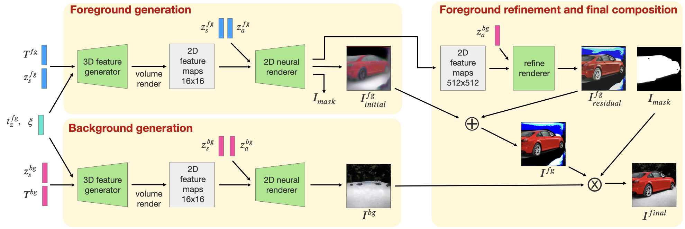

GIRAFFE HD: A High-Resolution 3D-aware Generative Model
| Yang Xue | Yuheng Li | Krishna Kumar Singh | Yong Jae Lee |
| paper | code |
Abstract
3D-aware generative models have shown that the introduction of 3D information can lead to more controllable image generation. In particular, the current state-of-the-art model GIRAFFE can control each object's rotation, translation, scale, and scene camera pose without corresponding supervision. However, GIRAFFE only operates well when the image resolution is low. We propose GIRAFFE HD, a high-resolution 3D-aware generative model that inherits all of GIRAFFE's controllable features while generating high-quality, high-resolution images ( resolution and above). The key idea is to leverage a style-based neural renderer, and to independently generate the foreground and background to force their disentanglement while imposing consistency constraints to stitch them together to composite a coherent final image. We demonstrate state-of-the-art 3D controllable high-resolution image generation on multiple natural image datasets.
Architecture
Controllable Scene Generation
GIRAFFE HD preserves all of GIRAFFE's 3D controllable features while generating images at significantly higher quality and resolution. Importantly, compared to GIRAFFE, our background remains more consistent when the foreground changes. Below we show samples of AFHQ Cat , CompCar and FFHQ .

Object Appearance

Background

Object Shape

Camera Elevation
Scaling
Multiple objects
Rotation
Citation
@inproceedings{xue2022giraffehd,
author = {Yang Xue and Yuheng Li and Krishna Kumar and Yong Jae Lee},
title = {GIRAFFE HD: A High-Resolution 3D-aware Generative Model},
booktitle = {CVPR},
year = {2022},
}